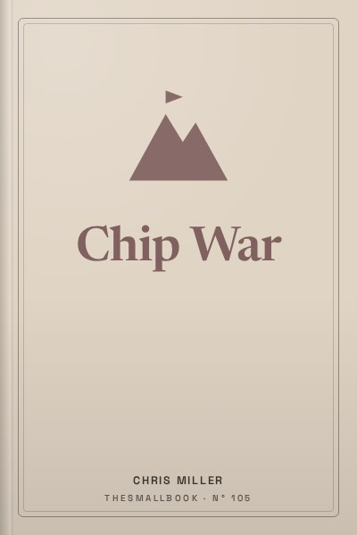

Library › History
Chip War - Summary & Key Lessons

The fight for the world's most critical technology. How tiny silicon chips came to decide global power.
📖 OPEN THE FULL INTERACTIVE BREAKDOWN →🌐 Read it in Hindi, Hinglish, Gujarati, Tamil & 22 more languages, with audio.
💡 The Big Idea
Chris Miller, an economic historian, tells the story of how semiconductors went from a laboratory curiosity to the foundation of the modern economy and military. The book traces the invention of the transistor and integrated circuit in the United States, the rise of Japanese memory chips, Korea's Samsung, Taiwan's TSMC and the Dutch company ASML, whose machines are the only ones able to print the most advanced chips. Miller shows how a few chokepoints, design software, manufacturing equipment and leading-edge fabs, make the global economy fragile, and how the rivalry between the United States and China is increasingly a struggle over chips. Understanding this history explains today's headlines about export controls, Taiwan and national chip missions, including India's.
🧠 The 10 Key Lessons
Lesson 1: The Transistor and the Integrated Circuit
Part I: Cold War Chips
The story starts at Bell Labs in 1947, where scientists invented the transistor, a tiny switch that could replace bulky vacuum tubes. In the late 1950s, Jack Kilby at Texas Instruments and Robert Noyce at Fairchild Semiconductor independently invented the integrated circuit, placing many transistors on one piece of material. This made electronics smaller, cheaper and more reliable. Early chips were expensive, but demand from the US military and space programme provided the first big market, funding the industry's growth.
📖 Example: The Minuteman missile and the Apollo programme were among the first major buyers of integrated circuits. NASA's purchases helped Fairchild and others scale production and drive down prices, making chips affordable for civilian products later. Read the full example →
⚡ Do this: Look at any device near you. Search how many transistors its main chip contains. Compare that number with the single transistor invented in 1947.
Lesson 2: Moore's Law: Doubling Every Two Years
Part I: Cold War Chips
In 1965, Gordon Moore, a co-founder of Fairchild and later Intel, predicted that the number of transistors on a chip would double regularly, a forecast later refined to roughly every two years. This became Moore's Law, less a law of nature than a target the industry worked relentlessly to meet. Each doubling made computing more powerful and cheaper, enabling personal computers, smartphones and the internet. Sustaining Moore's Law required ever more precise manufacturing and enormous investment.
📖 Example: The Intel 4004 microprocessor of 1971 had about 2,300 transistors. Modern smartphone chips contain billions. This exponential growth is why a phone today is more powerful than supercomputers of earlier decades. Read the full example →
⚡ Do this: Use the rule of doubling: start with 2,300 and double it every two years from 1971. See how close you get to today's chips.
Lesson 3: Asia Builds the Factories
Part II: The Circuitry of the American World
American firms soon moved chip assembly to Asia to cut costs, starting in Hong Kong, Taiwan, South Korea, Singapore and Malaysia. These countries saw chips as a path to development and offered incentives. Over time, Asian workers and engineers built deep expertise. This outsourcing created a supply chain spread across the Pacific, tying the region's economies to American technology and US security interests.
📖 Example: Fairchild opened an assembly facility in Hong Kong in the 1960s. Later, Texas Instruments set up in Taiwan, and governments in Singapore and Malaysia courted chip companies with tax breaks and infrastructure. Read the full example →
⚡ Do this: Read where the chips in your phone were designed, manufactured and assembled. Count how many countries were involved.
Lesson 4: Japan's Rise and the Memory Wars
Part III: Leadership Lost?
In the 1980s, Japanese companies such as Toshiba, NEC and Hitachi dominated memory chips with higher quality and lower prices, alarming American firms and the US government. Japan's success came from manufacturing excellence and cheap capital. The US responded with trade agreements and support for its industry. Intel exited memory to focus on microprocessors, a decision that later proved transformative. Japan's dominance faded as Korea and Taiwan entered the market.
📖 Example: Intel's leaders, Andy Grove and Gordon Moore, decided in 1985 to abandon memory chips, the company's original business, because Japanese competition made it unprofitable. Intel's focus on microprocessors powered the PC revolution. Read the full example →
⚡ Do this: Think of one area in your work or study where you face tough competition. Ask: should I fight harder here, or focus on a niche where I can lead?
Lesson 5: Samsung and Korea's Big Bet
Part IV: America Resurgent
South Korea's Samsung entered the chip business in the 1980s with government backing and huge investment, despite early losses. Its willingness to spend heavily during downturns allowed it to overtake Japanese rivals in memory chips. Korea's success shows how determined industrial policy, combined with corporate ambition, can build a world-leading industry.
📖 Example: Samsung's chairman Lee Byung-chul announced a major push into semiconductors in 1983. Over the following decades, Samsung became the world's largest memory chipmaker, a position it has held for years. Read the full example →
⚡ Do this: Research one Indian company trying to enter semiconductors or electronics manufacturing. Note what support it receives and what challenges it faces.
Lesson 6: TSMC and the Foundry Model
Part IV: America Resurgent
In 1987, Morris Chang founded Taiwan Semiconductor Manufacturing Company (TSMC) with support from the Taiwanese government. TSMC introduced the foundry model: manufacturing chips designed by other companies, without designing its own. This allowed 'fabless' companies such as Nvidia, Qualcomm and Apple to focus on design. TSMC's relentless focus on manufacturing excellence made it the world's most advanced chipmaker, producing most of the leading-edge chips.
📖 Example: Apple designs the chips in iPhones and Macs, but TSMC manufactures them in Taiwan. Nvidia's AI chips are also made by TSMC. This makes TSMC essential to the global technology industry. Read the full example →
⚡ Do this: Pick one technology company you admire. Find out who manufactures its chips and where.
Lesson 7: ASML and the Machine That Prints the Future
Part V: Integrated Circuits, Integrated World?
Making advanced chips requires lithography machines that use light to print tiny patterns. The Dutch company ASML is the only maker of extreme ultraviolet (EUV) lithography machines, which are essential for the most advanced chips. Each machine is enormously complex, costs well over a hundred million dollars and relies on components from many countries. This creates a chokepoint: without ASML's machines, no one can make the most advanced chips.
📖 Example: ASML's EUV machines took decades and billions of dollars to develop, with contributions from companies in Germany, the United States and elsewhere. Governments have restricted their sale to China, highlighting their strategic importance. Read the full example →
⚡ Do this: Watch a short video about EUV lithography. Note three things that make it so hard to copy.
Lesson 8: China's Chip Ambitions
Part VI: Offshoring Innovation?
China imports huge amounts of chips and has invested massively to build its own industry, including through companies such as SMIC and Huawei's chip design unit. However, it still depends on foreign technology for the most advanced chips and equipment. The US has used export controls to limit China's access to advanced chips and tools, seeing semiconductors as critical to military and economic power.
📖 Example: In 2019 and 2020, the US restricted Huawei's access to American chip technology, severely affecting its smartphone business. In 2022, broader export controls targeted China's access to advanced chips and manufacturing tools. Read the full example →
⚡ Do this: Read one recent news story about chip export controls. Identify which countries and companies are involved.
Lesson 9: Taiwan: The Most Dangerous Chokepoint
Part VII: The Chip Choke
Miller argues that Taiwan's concentration of advanced chip manufacturing makes it one of the world's most strategically important places. Any disruption, from conflict, natural disaster or blockade, could devastate the global economy. This has led the US, Europe, Japan and others to invest in domestic chip manufacturing to reduce dependence.
📖 Example: During the COVID-19 pandemic, chip shortages halted car production worldwide, showing how fragile supply chains are. A disruption in Taiwan could be far more severe. Read the full example →
⚡ Do this: Think about how a chip shortage could affect your daily life: phones, cars, appliances, payments. List three ways.
Lesson 10: The New Chip Race, Including India
Conclusion
Governments now treat chips as strategic assets. The US passed the CHIPS and Science Act to subsidise domestic manufacturing; Europe, Japan and Korea have similar plans. India launched the India Semiconductor Mission to attract fabs and assembly plants. Building a chip industry requires long-term investment, skilled workers and stable policy. The race will shape economic and military power for decades.
📖 Example: India approved several semiconductor projects in recent years, including assembly and testing facilities and a fab partnership led by Tata Electronics. Success will depend on building talent and supply chains over many years. Read the full example →
⚡ Do this: If you are a student, explore one course or career path related to semiconductors, electronics design or manufacturing.
✅ 5-Step Action Plan
- Trace where the chips in your phone were designed, made and assembled.
- Learn the difference between chip design, manufacturing and equipment.
- Follow one news story about chip export controls this month.
- Read about India's semiconductor projects and their timelines.
- Explore one course or career related to electronics or semiconductors.
⚠️ When This Doesn't Work
Miller writes from a largely American strategic perspective. The book focuses on great-power rivalry and gives less attention to the environmental costs of chip manufacturing, such as water and energy use, or to workers in assembly plants. India's chip ambitions are mentioned only briefly; building a real industry here will take decades, not years.
💀 The Graveyard Proves It
💬 Best Quotes from Chip War
- “World War II was decided by steel and aluminum. The Cold War that followed was defined by atomic weapons. Today's rivalry is about computing power.”
- “The semiconductor supply chain is a story of extreme specialization.”
- “Chips are the new oil.”
Interactive version: mark lessons as read, listen in your language, share quote cards.